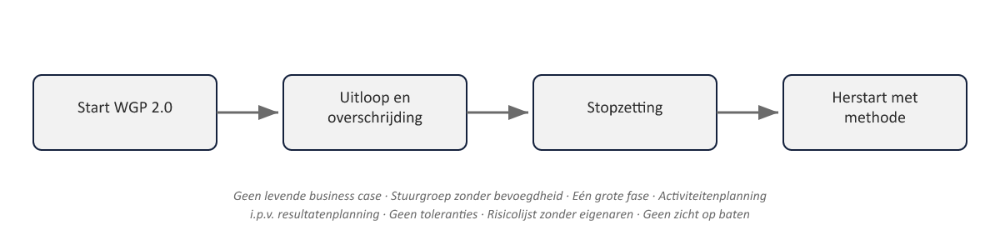

Sheet 1Titel
Project- en Programmamanagement
Niveau 1 · Deel 1: Waarom projecten mislukken
[Figuur 1-1 ontbreekt: Ductus-titelbeeld]
Sheet 2Waar deze cursus toe leidt
- Niveau 1: PRINCE2 7 Foundation + IPMA-D
- Niveau 2: PRINCE2 7 Practitioner + MSP 5e ed. Foundation + IPMA-C
- Niveau 3: MSP 5e ed. Practitioner + IPMA-B
- Doorlopende casus: pensioenverzekeraar Meridiaan
Sheet 3Het WGP 2.0-dossier
- Vervanging werkgeversportaal, twee jaar geleden
- 3x uitloop, 60% budgetoverschrijding
- Stopgezet vlak vóór livegang
- Zes maanden later: herstart — nu mét methode
Sheet 4Bevinding 1 en 2
1. Geen levende business case — nooit herijkt na goedkeuring
2. Stuurgroep zonder bevoegdheid — kwam bijeen, knikte, greep nooit in
Sheet 5Bevinding 3 en 4
3. Eén grote fase — 18 maanden zonder formeel beslismoment
4. Activiteitenplanning i.p.v. resultatenplanning — taken en deadlines, geen gedefinieerde producten
Sheet 6Bevinding 5 en 6
5. Geen toleranties — elke afwijking moest naar boven, dus werd niets gemeld
6. Risicolijst zonder eigenaren — correct benoemd, nooit beheerd
Sheet 7Bevinding 7
7. Geen zicht op baten — afgerekend op opleveren, niet op het beoogde resultaat

Sheet 8Waarom zeven?
- Zeven bevindingen — geen toeval
- PRINCE2 7 is opgebouwd rond zeven principes
- Elke bevinding wordt in deel 2–9 gesloten door een specifieke practice
- Aan het eind van deel 10: alle zeven expliciet afgevinkt
Sheet 9Wat is een project?
PRINCE2-definitie: een tijdelijke organisatie, opgezet om één of meer bedrijfsproducten op te leveren volgens een overeengekomen business case
- Tijdelijk
- Uniek
- Business case gedreven
Sheet 10Project of lijnwerk?
- Lijnwerk: dagelijkse mutatieverwerking bij Klantcontact
- Project: het automatiseren van die mutatieverwerking
| Kenmerk | Project | Lijnwerk |
|---|---|---|
| Tijdelijk | Begin en eind; stopt zodra producten zijn opgeleverd en overgedragen | Structureel, geen vaste einddatum |
| Uniek | Levert iets op dat er nog niet was, of verandert iets structureels | Routinematig herhaalde werkzaamheden |
| Business case gedreven | Aantoonbaar voordeel tegenover de investering vereist | Geen investeringsbeslissing nodig |
| Voorbeeld (Meridiaan) | Automatiseren van de mutatieverwerking | Dagelijkse mutatieverwerking bij Klantcontact |
Sheet 11Drie lagen
- Project (niveau 1): WGP 2.0, op zichzelf
- Programma (niveau 2): Programma Mutatieplatform — vijf projecten, gezamenlijke baten
- Portfolio/transitie (niveau 3): Stelselovergang — keuzes onder toezicht van DNB/AFM
Sheet 12Waarom dit onderscheid telt
- Een programma heeft geen vast eindproduct, maar een batenpad
- Projecttechnieken één-op-één toepassen op programmaniveau loopt vast
- Dit verschil keert terug in deel 11
Sheet 13Het certificeringslandschap
| Niveau | Methodegebonden | Competentiegebonden |
|---|---|---|
| 1 — Project, basis | PRINCE2 7 Foundation | IPMA-D |
| 2 — Project, gevorderd + Programma, basis | PRINCE2 7 Practitioner + MSP 5e editie Foundation | IPMA-C |
| 3 — Programma, gevorderd | MSP 5e editie Practitioner | IPMA-B |
- PRINCE2 7 en MSP 5: methodegebonden, PeopleCert
- IPMA/ICB4: competentiegebonden, assessment
- PMI (PMP/PgMP): vergelijkingskader, deel 16
Sheet 14PRINCE2 7
- Zeven principes, zeven practices, zeven processen
- Foundation: closed-book, kennisgericht
- Practitioner: open-book, scenariogericht — toepassen, niet reproduceren
Sheet 15MSP 5
- Programmamanagement-tegenhanger van PRINCE2
- Foundation: principes, thema’s, transformatieproces
- Practitioner: open-book scenario-examen
Sheet 16IPMA / ICB4
- Geen methode, maar een competentiebaseline
- Assessment door professionele assessoren, geen examen
- D (kennis) → C → B → A, oplopende ervaringseisen
- IPMA-B: 8-5-3-principe
Sheet 17Vooruitblik niveau 1
- Deel 2: de zeven principes
- Deel 3–6: de practices die de zeven bevindingen raken
- Deel 7–8: de processen
- Deel 9: wat IPMA-D toevoegt
- Deel 10: examentraining + PID-capstone
Sheet 18Afsluiting
Reflectievraag: welke van de zeven bevindingen herken jij het meest uit eigen ervaring?
[volgende deel: de zeven principes van PRINCE2 7]